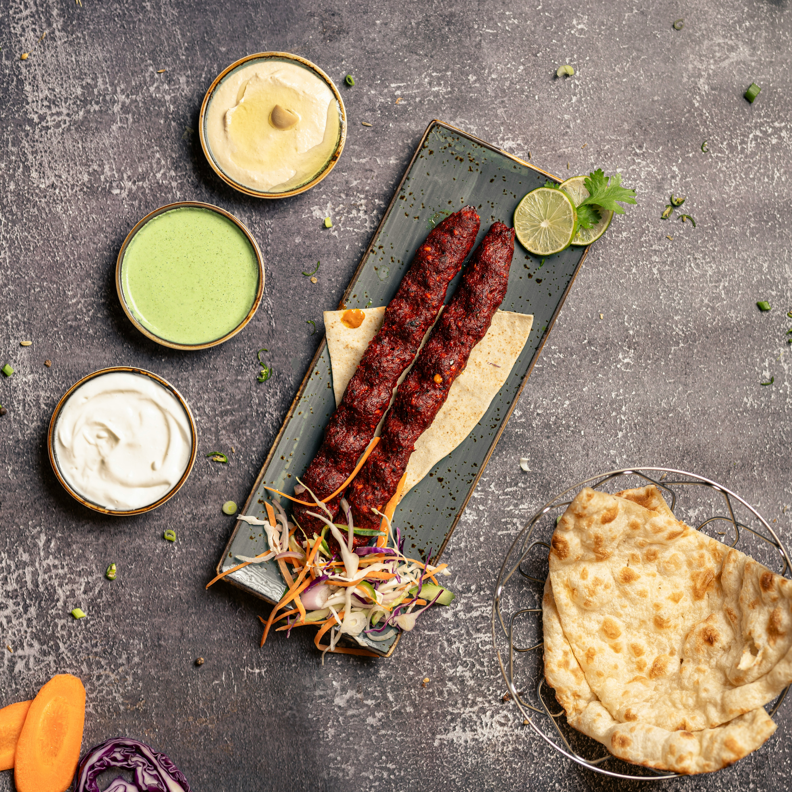

BIHARI KABAB

Description:
Bihari Kabab is a famous BBQ dish in Karachi, made with soft marinated beef strips. It is smoky, spicy, and melts in the mouth when cooked on charcoal.
Ingredients:
- Beef strips
- Yogurt
- Raw papaya paste
- Red chili powder
- Salt
- Ginger-garlic paste
- Mustard oil
- Bihari kabab masala
Steps:
- Marinate beef with all ingredients overnight.
- Skewer the meat strips.
- Cook on charcoal or grill.
- Turn sides until fully cooked and smoky.
- Serve with naan and chutney.
Home
Beef Biryani Recipe
Nihari Recipe
Chicken Karahi Recipe